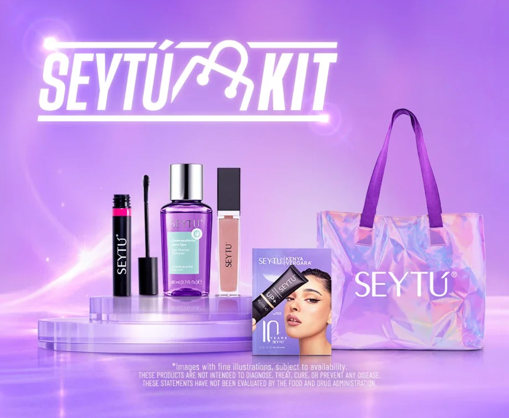
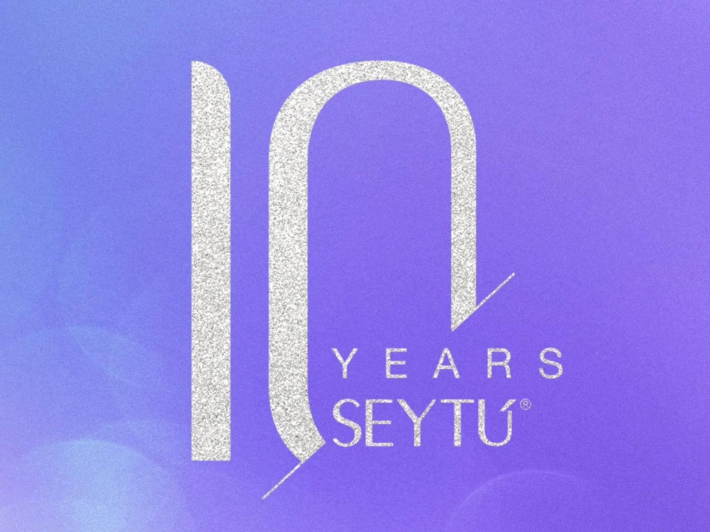
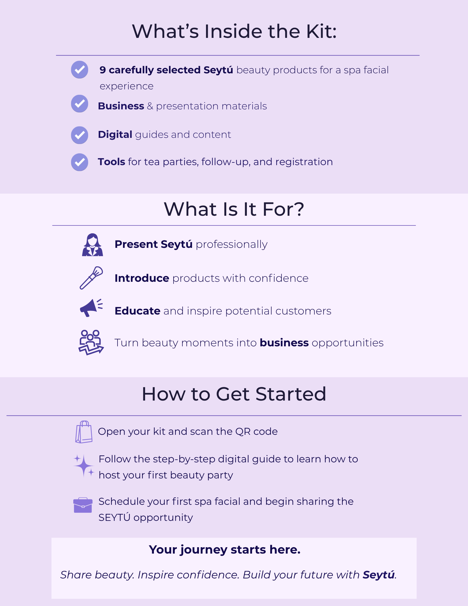

CASE STUDY / 05
SEYTÚ Glam N Care
Kit Campaign
A product and launch-support project created to introduce the SEYTÚ Glam N Care Kit through branded collateral, educational materials, and customer-facing launch assets.


My role
I supported the visual development and presentation of the kit by helping create mockups, educational collateral, and branded support materials. My work focused on organizing content clearly, aligning the materials to the brand, and helping translate the kit into a more polished customer-facing experience.
What I created
From mockup
From mockup
to support materials.


Key contributions
Launch support